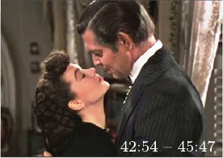
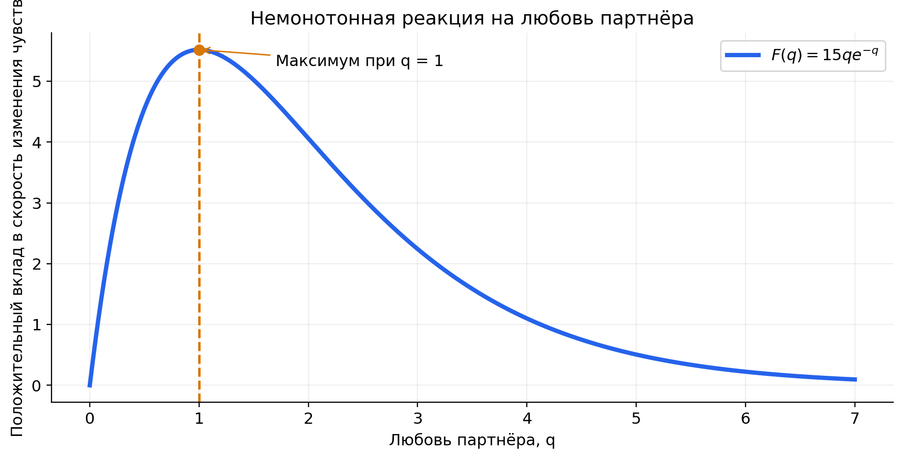
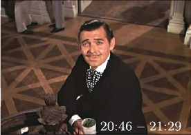
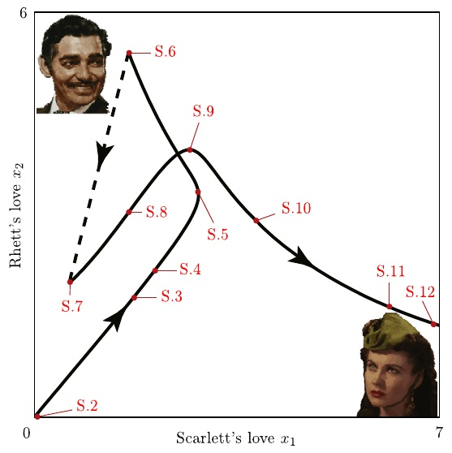
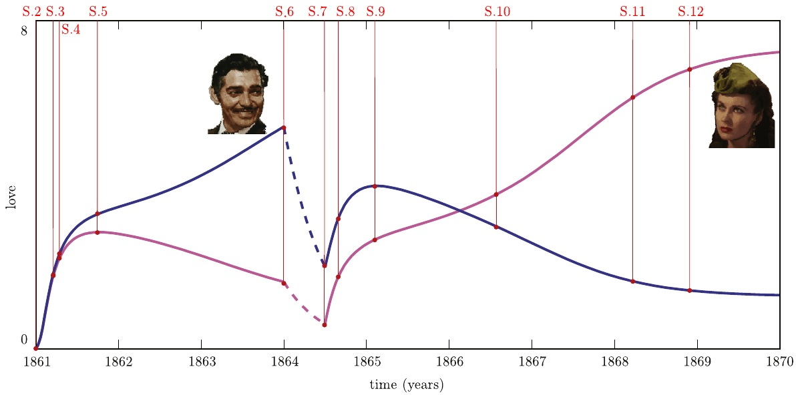
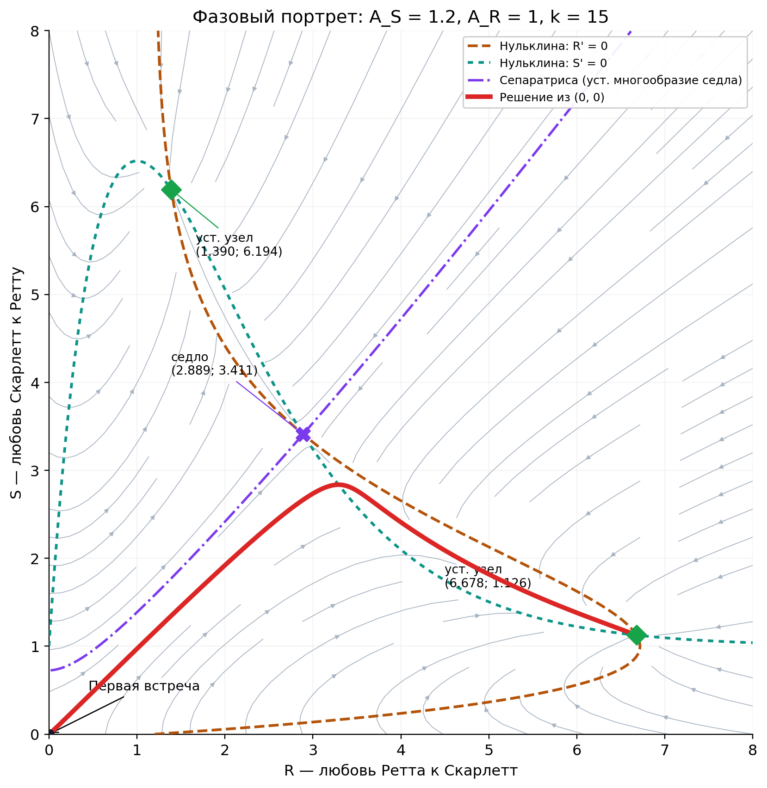
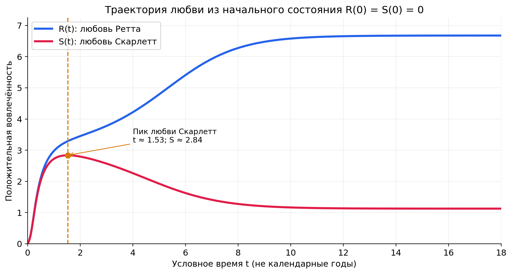

Первая встреча
A_S=1.2,\ A_R=1. Оба чувства растут из нуля. Затем интерес Скарлетт проходит максимум, а вовлечённость Ретта продолжает расти.
ФИЛЬМ 1939 ГОДА · МОДЕЛЬ 2013 ГОДА
Почему сначала сильнее влюблён Ретт, а к финалу — Скарлетт?
Ринальди, Делла Росса и Ланди описали этот поворот двумя уравнениями. Умеренный интерес сближает героев, а при сильном внимании ответ слабеет. Разлука и послевоенные обстоятельства меняют ход отношений.

МОДЕЛЬ
В каждый момент у пары есть две координаты. Точка на графике показывает, насколько каждый вовлечён. Когда чувства меняются, точка рисует траекторию.
Точка над буквой означает скорость изменения. A_S — привлекательность Скарлетт для Ретта, A_R — привлекательность Ретта для Скарлетт.
Без подпитки чувство затухает. Чем оно сильнее, тем больше скорость затухания.
Ретта тянет к Скарлетт даже в момент, когда она к нему равнодушна.
Небольшой интерес Скарлетт усиливает реакцию Ретта. После порога каждый дополнительный прирост её интереса уменьшает этот вклад.

В первой сцене авторы замечают, как Скарлетт охотно отвечает на небольшие знаки внимания и быстро теряет интерес, получив отклик. Героям приписывают такую же форму реакции в отношениях друг с другом.
Максимальный вклад равен k/e при q=1. За максимумом вклад убывает и остаётся положительным. Само чувство может ослабевать, когда забывание перевешивает оба положительных слагаемых.
Авторы обозначают чувства Скарлетт через x_1=S, а Ретта через x_2=R. При j\ne i:
\alpha_i задаёт скорость забывания, \rho_i — чувствительность к привлекательности, k_i — начальный наклон реакции, \beta_i — положение её максимума. Привлекательность партнёра j складывается из его качеств A_{hj} с весами \lambda_{hi}, которые придаёт им наблюдатель i.
Для рисунков статьи берут \alpha_i=\rho_i=\beta_i=1 и k_i=15 для обоих героев. Различия между этапами задают через A_S,A_R. В лаборатории сохранена эта нормировка, а силу отклика k можно менять.
ФИЛЬМ И ФАЗОВАЯ ПЛОСКОСТЬ
Авторы выбрали двенадцать фрагментов фильма. Первая сцена подсказала форму реакции Скарлетт, а остальные нанесены на рассчитанную траекторию в порядке событий.
A_S=1.2,\ A_R=1. Оба чувства растут из нуля. Затем интерес Скарлетт проходит максимум, а вовлечённость Ретта продолжает расти.
Между S.6 и S.7 проходит около полугода по статье. Авторы оставляют лишь забывание. За время \Delta t обе координаты умножаются на e^{-\Delta t}. На плоскости это движение по прямой к началу.
Финансовое положение Тары повышает для Скарлетт ценность богатства Ретта. При A_R=2 остаётся один устойчивый узел (R,S)\approx(1.27,7.35). К финалу сильнее вовлечена Скарлетт.

S.2 · 20:46–21:29
В Двенадцати Дубах Скарлетт замечает взгляд Ретта. Авторы помещают первую встречу в начало координат.


Кадры и расположение сцен воспроизведены по рис. 1 и 5 статьи. Координаты сцен выражают авторскую оценку. Пересечение ветвей на рис. 5 возможно, потому что до и после разлуки действуют разные уравнения.
ЛАБОРАТОРИЯ
Задайте привлекательность, отклик и начальные чувства. Нажмите на фазовую плоскость, чтобы перенести старт. Двигайте время и наблюдайте одну и ту же точку на обоих графиках.
Время условное. В режиме «Весь сюжет» разлука начинается при t=3.6. Её длина по умолчанию равна одной условной единице. Эти длительности выбраны для демонстрации порядка событий. Во время разлуки остаются только \dot R=-R,\ \dot S=-S.
РАЗБОР ЗАДАЧИ ИЗ УЧЕБНИКА
Четыре пункта исходной задачи посвящены системе с постоянными параметрами. Численный пример относится к первой части истории.
Уравнение Ретта содержит затухание -R, постоянную подпитку A_S и ответ на чувства Скарлетт F(S). У Скарлетт аналогичные слагаемые -S,\ A_R,\ F(R). Производная F'(q)=ke^{-q}(1-q) положительна до q=1 и отрицательна после, поэтому усиление внимания сначала увеличивает, а затем уменьшает ответ.
На обеих осях поле строго направлено в первый квадрант. При первом выходе через ось соответствующая координата должна была бы убывать до нуля, но её производная там положительна. Поэтому траектория из квадранта не выходит, а из (0,0) сразу входит внутрь. При таких стартах модель описывает диапазон от равнодушия до сильной вовлечённости.
Траектории также ограничены. Для q\ge0 выполнено F(q)\le k/e. Положим M_R=A_S+k/e,\ M_S=A_R+k/e. Умножив неравенства \dot R+R\le M_R,\ \dot S+S\le M_S на e^t и проинтегрировав, получаем:
В критерии Бендиксона — Дюлака берём множитель B\equiv1. Дивергенция вычисляется по производным каждой компоненты по собственной координате:
Поле гладкое на всей плоскости, а дивергенция имеет строгий отрицательный знак. Если бы была замкнутая орбита C, поле было бы касательно к ней и поток через неё равнялся бы нулю. По формуле Грина тот же поток равен \iint_D(-2)\,dR\,dS=-2\,\mathrm{Area}(D)<0, где D — внутренность C. Противоречие исключает все нетривиальные периодические орбиты. Временные подъёмы и спады чувств при этом возможны.
Подставляем A_S=1.2,\ A_R=1,\ k=15. Нульклина — кривая, на которой одна компонента скорости равна нулю. Ищем пересечения двух нульклин:
Для численного поиска можно подставить вторую формулу в первую и искать корни на отрезке [1.2,\,1.2+15/e].
В отчёте пересечения найдены решателем с несколькими начальными приближениями. По левую сторону нульклины \dot R=0 поле направлено вправо, а по правую — влево. Ниже графика \dot S=0 — вверх, выше — вниз.
Дифференцируем правые части, затем подставляем координаты равновесий:
| Точка (R*, S*) | Собственные значения | Тип |
|---|---|---|
| (1,390; 6,194) | −0,519; −1,481 | Устойчивый узел · сильнее Скарлетт |
| (2,889; 3,411) | +0,372; −2,372 | Седло |
| (6,678; 1,126) | −0,744; −1,256 | Устойчивый узел · сильнее Ретт |
Два отрицательных действительных значения дают устойчивый узел, значения разных знаков — седло. Два узла дают два исхода при одних параметрах. Сепаратриса — устойчивое многообразие седла — разделяет их бассейны. Её строят обратным интегрированием с двух сторон седла вдоль направления отрицательного собственного значения.
В первой встрече R_0=S_0=0, так что \dot R(0)=1.2,\ \dot S(0)=1. Численное решение попадает в бассейн узла (6.678,1.126). Максимум чувств Скарлетт наступает при t\approx1.533: S\approx2.837,\ R\approx3.291. В этот момент траектория пересекает нульклину \dot S=0.
В отчёте использован численный метод RK45. Лаборатория считает методом Рунге — Кутты четвёртого порядка с шагом до 0,02 условной единицы.

